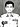

Main page
Contents
Featured content
Current events
Random article
Donate to Wikipedia
Wikipedia store
Interaction
Help
About Wikipedia
Community portal
Recent changes
Contact page
Tools
Create a book
Download as PDF
Printable version
Languages
Pilot Officer Rashid Minhas (Urdu: نہاسb. 17 February 1951 – August 20,1971) H, was a military officer in the Pakistan Air Force (PAF). Minhas is the only PAF officer to receive the highest valour award, which is the Nishan-e-Haider. He is also the youngest person and the shortest-serving officer to have received this award. He is remembered for his death in 1971 in a jet trainer crash while struggling to regain the controls from a defecting pilot: Flight Lieutenant Matiur Rahman.
In spite of having a short military career in the Pakistan Air Force, he has the unique distinction of being the youngest and yet he only air force personnel cited with the highest gallant award for his combat services. During the routine training mission in August of 1971, P/Off. Minhas attempted to gain control of his jet trainer when his commanding officer Flight Lieutenant Matiur Rahman was trying to defect to India, and deliberately commander his plane that crashed near the Thatta District, Sindh in Pakistan
Born
Died
Burried
Allegiance
Service Branch
Year of Services
Rank
Service Number
Unit
Battles War
Awards
February 17, 1951
Karachi, Sindh, Pakistan
20 August 1971 (aged 20)
Thatta District, Sindh in Pakistan
Karachi, Sindh, Pakistan
Pakistan
 Pakistan Air Force
Pakistan Air Force
1969–1971
Pilot Officer (2nd Lt.)
PAF No. 5602[1]
No. 2 Squadron Minhas
Bangladesh Liberation War †
Nishan Haider
Biography
Family background, early life and education
Main article: Kashmiri-Punjabi
Rashid Minhas was born at the PAF Hospital in Karachi, Sindh in Pakistan, on 17 February of 1951.[2] He was of the Kashmiri descent whose family background was of the Muslim Rajput who hailed from the Punjab-speaking Minhas clan.[3][4][5] His family had hailed from Kashmir (now part of India) who emigrated to Gurdaspur and later settled in Sialkot in Punjab, Pakistan.[2]
His father, Majeed Minhas, a civil engineer and an alumnus of the NED University in Karachi, was in a construction management business who later moved to Lahore, Punjab, for the construction project.[2] He was educated in Lahore and taking admissioned in British-managed St. Mary's School in Rawalpindi when his father found an employment opportunity but later permanently settled in Karachi.[2]
He passed and qualified for his Senior Cambridge examination and performed well while finishing the O-level and A-level qualifications from the St. Patrick's High School in Karachi.[6]:181[7] His father, Majeed Minhas, wanted his son, Rashid, to follow his step by attending the engineering university and strongly desired for his son to gain a degree in engineering after finishing his high schooling in Karachi.:182[7] Against the wishes of his father, Rashid entered in the PAF School in Lower Topa in 1968, the Air Force's officer candidate school, and forwarded towards completing his military training at the Pakistan Air Force Academy in 1969.:182[7]
Death
Having joined the air force, Minhas was commissioned on March 13, 1971, in the 51st GD(P) Course.[8] He began training to become a pilot. On August 20 of that year, in the hour before noon, he was getting ready to take off in a T-33 jet trainer in Karachi, Pakistan. His second solo flight in that type of aircraft. Minhas was taxiing toward the runway when a Bengali instructor pilot, Flight Lieutenant Matiur Rahman, signalled him to stop and then climbed into the instructor's seat. The jet took off and turned toward India.
Minhas radioed PAF Base Masroor with the message that he was being hijacked. The air controller requested that he resend his message, and he confirmed the hijacking. Later investigation showed that Rahman intended to defect to India to join his compatriots in the Bangladesh Liberation War, along with the jet trainer. In the air, Minhas struggled physically to wrest control from Rahman; each man tried to overpower the other through the mechanically linked flight controls. Some 32 miles (51 km) from the Indian border, the jet crashed near Thatta. Both men were killed.[9]
Minhas was posthumously awarded Pakistan's top military honour, the Nishan-E-Haider, and became the youngest man and the only member of the Pakistan Air Force to win the award. Similarly, Rahman was honoured by Bangladesh with their highest military award, the Bir Sreshtho.[10]
Minhas's Pakistan military citation for the Nishan-E-Haider states that he "forced the aircraft to crash" in order to prevent Rahman from taking the jet to India.[9] This is the official, popular and widely known version of how Minhas died. Yawar A. Mazhar, a writer for Pakistan Military Consortium, relayed in 2004 that he spoke to retired PAF Group Captain Cecil Chaudhry about Minhas, and that he learned more details not generally known to the public. According to Mazhar, Chaudhry lead the immediate task of investigating the wreckage and writing the accident report. Chaudhry told Mazhar that he found the jet had hit the ground nose first, instantly killing Minhas in the front seat. Rahman's body, however, was not in the jet and the canopy was missing. Chaudhry searched the area and saw Rahman's body some distance behind the jet, the body found with severe abrasions from hitting the sand at a low angle and a high speed. Chaudhry thought that Minhas probably jettisoned the canopy at low altitude causing Rahman to be thrown from the cockpit because he was not strapped in. Chaudhry felt that the jet was too close to the ground at that time, too far out of control for Minhas to be able to prevent the crash.[11]
Awards and decorations
The Nishan-e-Haider which was awarded to Rashid Minhas
Notes and references
- As seen in the footage: 
- urdubiography, urdubiography (2012). "Rashid Minhas:
biography in Urdu" (html).
www.urdubiography.com (in Romanized Urdu). Retrieved 13 March 2019. - "National Hero Rashid Minhas". OnePakistan. Retrieved 2014-07-18.
- "Rashid Minhas death anniversary". Saach Tv. Archived from the original on 2014-07-25. Retrieved 2014-07-18.
- "1971 war hero Rashid Minhas". Samaa tv. Retrieved 2014-07-18.
- "Nishan-i-Haider laurelled Rashid Minhas' anniversary today". Samaa Tv.
Archived
from the original on 2012-06-11. Retrieved 2012-01-29. - Malik, Imran A. (2018). "Pilot Officer Rashid Minhas Shaheed". Moon Glade (PDF)
- Rawalpindi, Punj. Pakistan: >Inter-Services Public Relations.